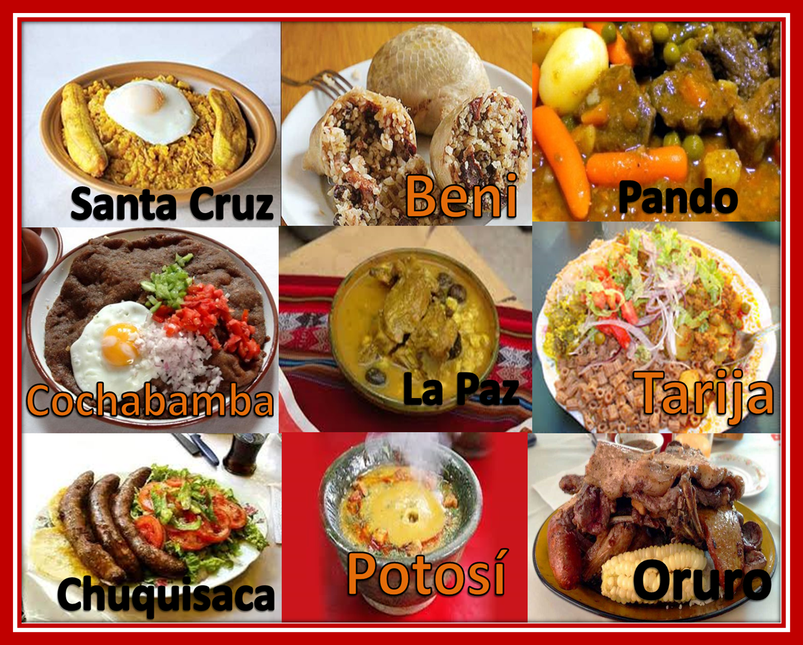

Cocina boliviana
La mesa boliviana tiene tres pisos: altiplano, valle y llano.
Una gastronomía nacida de raíces indígenas, europeas y árabes, moldeada por la altura, el clima y la tierra de cada región.
Ver platos típicos
Explora el sitio
Recorre cada rincón de la gastronomía boliviana.
Platos típicos
Salteñas, pique macho, sopa de maní y silpancho.
Ver platos →Ingredientes
Los productos nativos que son la base de la cocina del país.
Ver ingredientes →Regiones
Altiplano, valles y llanos: tres cocinas, un mismo país.
Ver regiones →Reserva
Agenda tu cita y ven a conocernos en persona.
Reservar →Contacto
Escríbenos o llámanos, estamos para ayudarte.
Contactar →